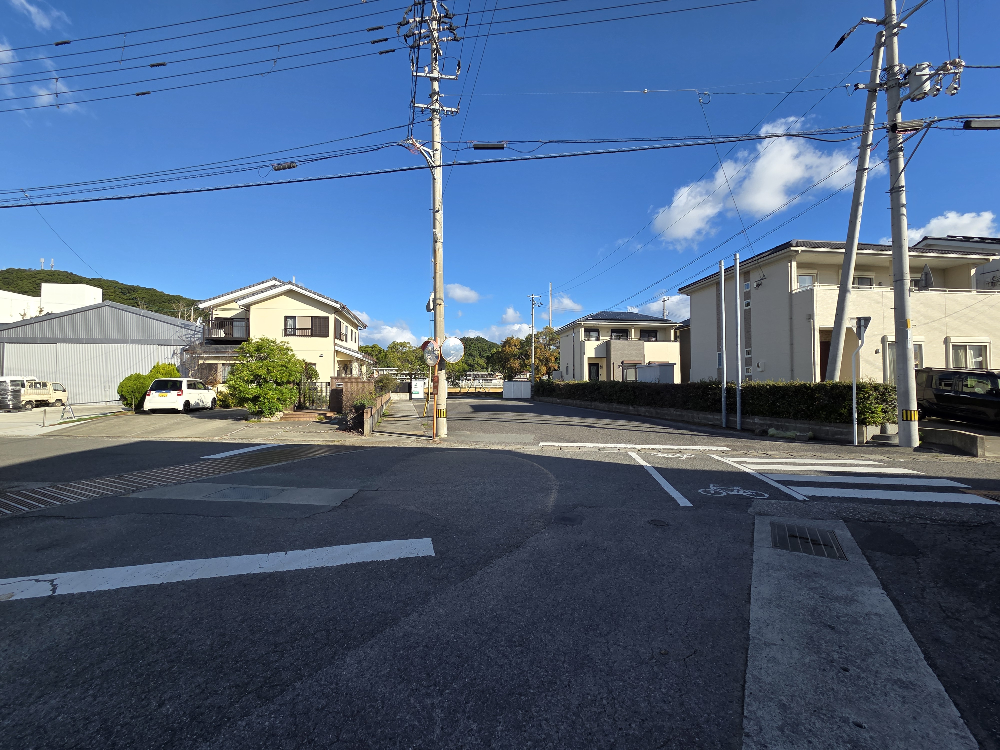

ようこそ、Fitaire in Naruto へ
このページはご宿泊者さま専用です。内容の無断転載はご遠慮ください。
道順・アクセス方法
お車でお越しの際は、神戸淡路鳴門自動車道「鳴門北インター」または「鳴門インター」で下車し、約15分で到着します。
目的地の目印は「鳴門第二中学校」です。学校を目標にお進みください。
夜間は街灯が少なく、道が分かりにくい箇所があります。下の写真を参考にお越しください。



Googleマップで「徳島県鳴門市里浦町里浦字花面７０４−２」と検索しても到着します。
駐車場の使い方
指定区画に駐車をお願いします。
深夜・早朝の出入庫はお静かに。
- 駐車可能台数：2台（小型車なら最大3台まで可）
- 枠線外駐車・路上駐車は厳禁
- 写真の赤いエリアは駐車禁止です。ホストがガレージのみ出入りする可能性があります。

チェックイン方法（テンキー式スマートロック）
- 外玄関ドア横のテンキー式スマートロック（キーパッド）をご確認ください。
- 前日にお送りする6桁の暗証番号を入力します。
- 入力後、✓（チェック）マークを押すと解錠します。
- 外玄関と内玄関は連動しています。外玄関が解錠されると内玄関も解錠されます。
- 2分で自動施錠されます。お出かけの際は施錠をご確認ください。
開かない／機器トラブル時：ホストまでご連絡ください。TEL：080-5312-8677

🇯🇵 ハウスルール（Fitaire in Naruto）
【1. チェックイン／チェックアウト】
- チェックイン：15:00以降
- チェックアウト：11:00まで
【2. 館内利用のお願い】
- 玄関に入られたら、靴を脱いでスリッパをご利用ください。
- 滞在中は、他のお客様・ご近隣の住民の方への配慮をお願いいたします。とくに22:00以降は音量を控えめにお願いいたします。
- 客室・共有スペースの備品・家具・設備は大切にご使用ください。万一、破損・汚損された場合は実費をご請求させていただくことがあります。
【3. 禁止事項】
- 敷地内・お部屋内は基本的に禁煙です（ベランダを含む）。
- 喫煙は屋外に限り可とします。その際は火の始末を徹底し、携帯灰皿をご持参のうえ吸い殻は各自でお持ち帰りください。
- ペットの同伴・持ち込みは事前承認のない限りご遠慮ください。
- 宿泊登録者以外の入室・宿泊およびパーティー、イベント利用は禁止です。
- 宿泊人数を超えてのご利用は禁止です。予約時に申告された人数のみご利用ください。
【4. 設備・共有スペースのご利用】
- キッチン・調理器具・食器などをご利用の際は、使用後に洗浄・元の位置へ片付けをお願いいたします。
- ゴミは可燃・不燃・ペットボトル・缶・瓶に分別し、所定のゴミ箱へお出しください。
- 外出時・就寝時には、照明・エアコン・テレビ等の電源オフ／戸締まりをお願いいたします。
【5. 安全・防災・その他】
- 貴重品はお客様ご自身で管理をお願いします。紛失・盗難等の責任は負いかねます。
- 火災・地震などの緊急時には、備え付けの避難経路・消火器・一酸化炭素検知器をご確認ください。
- ガレージについて：敷地内のガレージ部分はホストが物品管理のため出入りする場合があります。ゲストスペース（居室・庭など）へ立ち入ることはありません。
チェックアウト時間（11:00）を過ぎますと、追加料金を請求させていただくことがあります。
連泊される方へのご案内
- 滞在中の途中清掃はございません。清掃が必要な場合は、写真の場所にある掃除機をご自由にお使いください。
- リネン類（シーツ・タオル等）の交換は行っておりません。
- 洗濯が必要な場合は、室内の洗濯機・洗剤をご利用ください。
または近隣のコインランドリーも便利です。 - ゴミ箱が満杯の場合は、シンク下ワゴン内の替え袋に交換し、いっぱいになった袋は口を縛って屋外の指定ゴミ箱内に置いてください。


近隣のコインランドリー
- コインランドリー 新洗蔵 パワーシティー店
徳島県鳴門市撫養町大桑島字濘岩浜4-1
営業時間：5:00〜22:00 - コインランドリー アバンセ ハローズ鳴門店
徳島県鳴門市大津町吉永438-1
営業時間：24時間営業 - ウチノ海コインランドリー立岩店
徳島県鳴門市撫養町立岩七枚142
営業時間：6:00〜22:00
その他のご注意
- トイレットペーパー・ティッシュ・洗剤類などの消耗品は初回分のみ設置しております。
- 家電や設備の不具合はご自身で修理せず、ホストへご連絡ください。
周辺案内（抜粋）
- 大塚国際美術館／鳴門公園・渦の道
- 阿波おどり会館／アスタムランド／祖谷のかずら橋
- 道の駅くるくるなると／産直あいさい／じゃのひれ（淡路）
- 飲食：リストランテ フィッシュボーン ほか
緊急連絡先
ホスト：080-5312-8677
タクシー：鳴門第一タクシー 088-685-5555